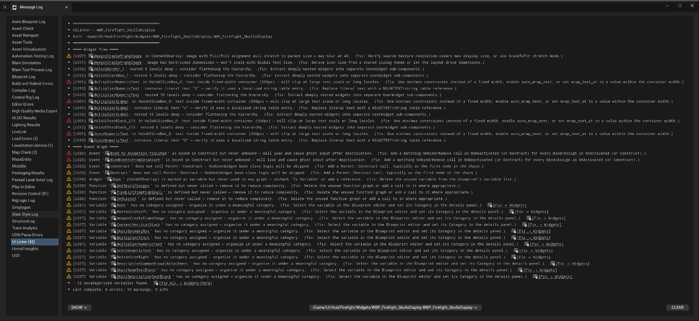

UI Linter
Halo Studios · Halo: Campaign Evolved · Internal Unreal plugin · 2025

A three-pillar static analyzer for Unreal Widget Blueprints, 22 deterministic rules mined from real Jira patterns, surfacing findings inline in the Editor and via CLI.

Technical deep-dive. How the tool was built, why the three pillars (Knowledge Base, Checklist Generator, Deterministic Linter), and what changed in team practice after adoption: UI Linter, Widget Blueprint Static Analysis →